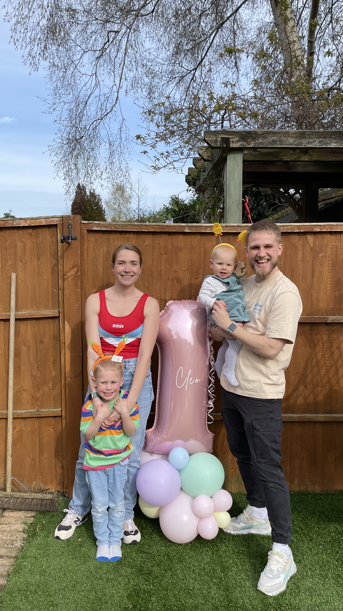

James Morley

Contact
43 Woodmancott Close
Bracknell
Berkshire
RG12 0XU
About Me
I am an outgoing, highly motivated and energetic individual with excellent
communication, written and organisational skills.
A people person who strives to be the best at what I do and enjoy working
off of my own initiative and as part of a team.
I have the ability to work under pressure and to specified deadlines. A
fast learner and enjoy passing on knowledge to others.
Education
-
The Complete 2023 Web Development Bootcamp - Online (April 2023 -
Ongoing)
- Excel Beginner to Expert - Online (January 2019)
- National Diploma Sports Science - NESCOT College (2007-2009)
- 8 GCSE's A*-C grade - Rutlish High School (2006)
Work Experience
-
John Lewis Partnership
- WFM/RLM Analyst (12/11/2018 - Current)
-
John Lewis:
-
Section Manager - Various Departments(27/12/2016 - 11/11/2018)
-
Waitrose
- Section Manager - Customer Service (05/2016-12/2016)
- Assistant Section Manager - Fresh (07/2015 - 05/2016)
-
Assistant Section Manager Trainee - Ambient (04/2014 - 07/2015)
- Team Leader - Fresh (10/2013-04/2014)
- Team Leader - Operations (01/2013 - 10/2013)
- Supermarket Assistant (07/2010 - 12/2012)
I have worked for the Partnership since 2010 starting as a part-time
supermarket assistant in Waitrose.
Over the last 13 years, I have worked my way through various levels and
departments, and also in John Lewis Reading as a Section Manager and am
now employed as WFM/RLM Analyst as part of the WFM Programme.
Here, I have responsibility for managing the build and maintenance of the
Waitrose Labour Model, feeding data from the labour model into our
scheduling system, creating reporting tools/dashboards and managing large
volumes of data on a daily basis.
My main responsibilities involve:
- Building/maintaining the Waitrose Retail
- Labour Model in our online system (Adapt)
- Budgeting for the Waitrose estate using the RLM
- Business case analysis
- Attribute and data management
- Feeding and maintaining data in our Scheduling system
- Continued self development
- Automating laborious work using VBA in Excel or Javascript
- (Google Apps Script) in Google Sheets
- Management of large datasets (over2+ billion bits of data)
- Stakeholder management/engagement
- Presenting data/findings to internal and external teams.
MK Plumbing (Apprentice)
After finishing college, I began working for MK Plumbing as an apprentice,
working full-time alongside my manager and additional external labourers.
Through this role, I gained great practical and physical working skills
which set a benchmark for my future employment.
These skills included;
- Time management
- Delivering a customer orientated service to fit their specific needs
- The art of accuracy and the importance of regular communication.
Skills
- Google Suite ⭐️⭐️⭐️⭐️⭐️
- Google Apps Script ⭐️⭐️⭐️⭐️⭐️
- Javascript ⭐️⭐️⭐️
- Web Development ⭐️
Further Information
Hobbies
Contact